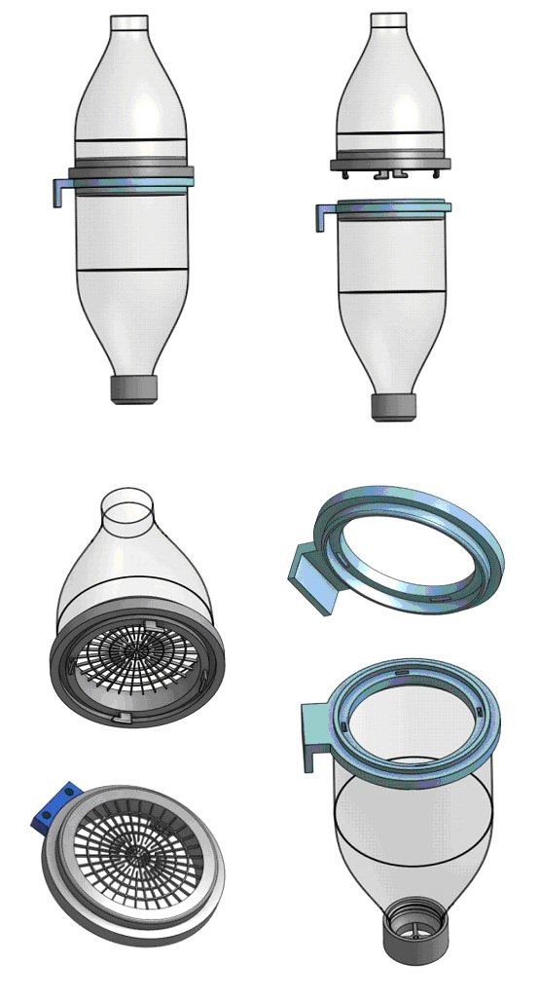
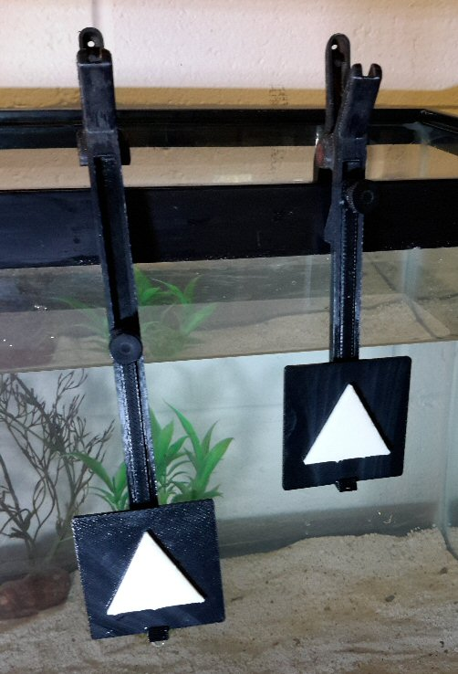
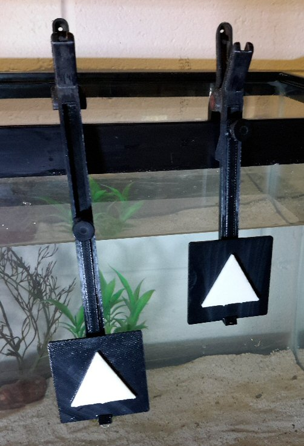
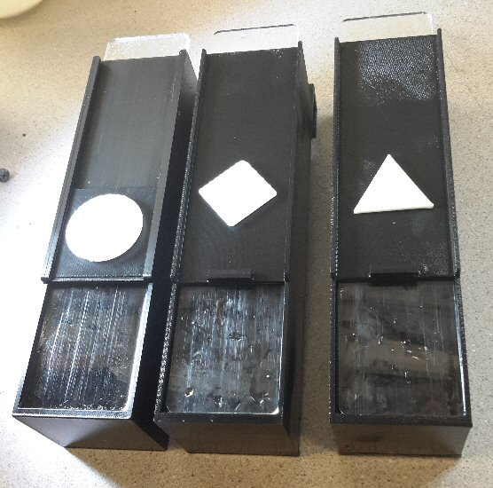

Designs for Cephalopod
Operations at the Marine Biological Laboratory.

Cephalopod Embryo Incubator


Embryo Bubbler

Signs and holders used in Alex
Schnell's studies on Complex
Cognition in the Common Cuttlefish at MBL.
 

 
Fabrication of molds for forming
wells in agarose for cell research for Amy Herbert, Grass Fellow
at MBL.